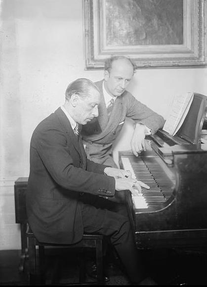

Igor Fyodorovich Stravinsky (/strəˈvɪnski/; Russian: Игорь Фёдорович Стравинский; 17 June [O.S. 5 June] 1882 – 6 April 1971) was a Russian-born composer, pianist, and conductor. He is widely considered one of the most important and influential composers of the 20th century.
Stravinsky’s compositional career was notable for its stylistic diversity. He first achieved international fame with three ballets commissioned by the impresario Serge Diaghilev and first performed in Paris by Diaghilev’s Ballets Russes: The Firebird (1910), Petrushka (1911), and The Rite of Spring (1913). The latter transformed the way in which subsequent composers thought about rhythmic structure and was largely responsible for Stravinsky’s enduring reputation as a musical revolutionary who pushed the boundaries of musical design. His “Russian phase”, which continued with works such as Renard, L’Histoire du soldat, and Les noces, was followed in the 1920s by a period in which he turned to neoclassicism. The works from this period tended to make use of traditional musical forms (concerto grosso, fugue, and symphony) and drew from earlier styles, especially those of the 18th century. In the 1950s, Stravinsky adopted serial procedures. His compositions of this period shared traits with examples of his earlier output: rhythmic energy, the construction of extended melodic ideas out of a few two- or three-note cells, and clarity of form and instrumentation.
Stravinsky, c. 1920-1930
Music
Stravinsky’s output is typically divided into three general style periods: a Russian period, a neoclassical period, and a serial period.
Russian period (c. 1907–1919)
Aside from a very few surviving earlier works, Stravinsky’s Russian period, sometimes called primitive period, began with compositions undertaken under the tutelage of Nikolai Rimsky-Korsakov, with whom he studied from 1905 until Rimsky’s death in 1908, including the orchestral works Symphony in E♭ major (1907), Faun and Shepherdess (for mezzo-soprano and orchestra; 1907), Scherzo fantastique (1908), and Feu d’artifice (1908/9). These works clearly reveal the influence of Rimsky-Korsakov, but as Richard Taruskin has shown, they also reveal Stravinsky’s knowledge of music by Glazunov, Taneyev, Tchaikovsky, Wagner, Dvořák, and Debussy, among others.
In 1908, Stravinsky composed Funeral Song (Погребальная песня), Op. 5 to commemorate the death of Nikolai Rimsky-Korsakov. The piece premiered 17 January 1909 in the Grand Hall of the Saint Petersburg Conservatory but was then lost until September 2015, when it resurfaced in a back room of the city’s Conservatoire. It was played again for the first time in over a century on 2 December 2016. The rediscovery generated much enthusiasm and, as a result, over 25 performances were scheduled in 2017.
Performances in St. Petersburg of Scherzo fantastique and Feu d’artifice attracted the attention of Serge Diaghilev, who commissioned Stravinsky to orchestrate two piano works of Chopin for the ballet Les Sylphides to be presented in the 1909 debut “Saison Russe” of his new ballet company.
The Firebird was first performed at the Paris Opéra on 25 June 1910 by Diaghilev’s Ballets Russes. Like Stravinsky’s earlier student works, The Firebird continued to look backward to Rimsky-Korsakov not only in its orchestration, but also in its overall structure, harmonic organization, and melodic content.
According to Taruskin, Stravinsky’s second ballet for the Ballet Russes, Petrushka, is where “Stravinsky at last became Stravinsky.”
The music itself makes significant use of a number of Russian folk tunes in addition to two waltzes by Viennese composer Joseph Lanner and a French music hall tune (La Jambe en bois or The Wooden Leg).
In April 1915, Stravinsky received a commission from Singer (Princesse Edmond de Polignac) for a small-scale theatrical work to be performed in her Paris salon. The result was Renard (1916), which he called “A burlesque in song and dance.”
In 1951, he completed his last neoclassical work, the opera The Rake’s Progress to a libretto by Auden and Kallman based on the etchings of Hogarth. It premiered in Venice that year and was produced around Europe the following year before being staged in the New York Metropolitan Opera in 1953. It was staged by the Santa Fe Opera in a 1962 Stravinsky Festival in honor of the composer’s 80th birthday and was revived by the Metropolitan Opera in 1997.
Serial period (1954–1968)
In the 1950s, Stravinsky began using serial compositional techniques such as dodecaphony, the twelve-tone technique originally devised by Schoenberg.[138] He first experimented with non-twelve-tone serial techniques in small-scale vocal and chamber works such as the Cantata (1952), the Septet (1953) and Three Songs from Shakespeare (1953). The first of his compositions fully based on such techniques was In Memoriam Dylan Thomas (1954). Agon (1954–57) was the first of his works to include a twelve-tone series and Canticum Sacrum (1955) was the first piece to contain a movement entirely based on a tone row. Stravinsky expanded his use of dodecaphony in works such as Threni (1958) and A Sermon, a Narrative and a Prayer (1961), which are based on biblical texts, and The Flood (1962), which mixes brief biblical texts from the Book of Genesis with passages from the York and Chester Mystery Plays.

Stravinsky with Wilhelm Furtwängler, German conductor and composer.
Innovation and influence
Stravinsky has been called “one of music’s truly epochal innovators.” The most important aspect of Stravinsky’s work, aside from his technical innovations (including in rhythm and harmony), is the “changing face” of his compositional style while always “retaining a distinctive, essential identity.”
Stravinsky’s use of motivic development (the use of musical figures that are repeated in different guises throughout a composition or section of a composition) included additive motivic development. This is a technique in which notes are removed from or added to a motif without regard to the consequent changes in metre. A similar technique can be found as early as the 16th century, for example in the music of Cipriano de Rore, Orlandus Lassus, Carlo Gesualdo and Giovanni de Macque, music with which Stravinsky exhibited considerable familiarity.
The Rite of Spring is notable for its relentless use of ostinati, for example in the eighth-note ostinato on strings accented by eight horns in the section “Augurs of Spring (Dances of the Young Girls).” The work also contains passages where several ostinati clash against one another. Stravinsky was noted for his distinctive use of rhythm, especially in the Rite of Spring (1913). According to the composer Philip Glass, “the idea of pushing the rhythms across the bar lines [...] led the way [...]. The rhythmic structure of music became much more fluid and in a certain way spontaneous.” Glass mentions Stravinsky’s “primitive, offbeat rhythmic drive.” According to Andrew J. Browne, “Stravinsky is perhaps the only composer who has raised rhythm in itself to the dignity of art.” Stravinsky’s rhythm and vitality greatly influenced the composer Aaron Copland.
Over the course of his career, Stravinsky called for a wide variety of orchestral, instrumental, and vocal forces, ranging from single instruments in such works as Three Pieces for Clarinet (1918) or Elegy for Solo Viola (1944) to the enormous orchestra of The Rite of Spring (1913), which Copland characterized as “the foremost orchestral achievement of the 20th century.”
Stravinsky’s creation of unique and idiosyncratic ensembles arising from the specific musical nature of individual works is a basic element of his style.
Following the model of his teacher, Nikolai Rimsky-Korsakov, Stravinsky’s student works such as the Symphony in E♭, Op. 1 (1907), Scherzo fantastique, Op. 3 (1908), and Fireworks (Feu d’artifice), Op. 4 (1908), call for large orchestral forces. The Symphony, for example, calls for 3 flutes (3rd doubles piccolo), 2 oboes, 3 clarinets in B♭, 2 bassoons, 4 horns in F, 3 trumpets in B♭, 3 trombones, tuba, timpani, bass drum, triangle, cymbals, and strings. The Scherzo fantastique calls for a slightly larger orchestra but completely omits trombones: this was Stravinsky’s response to Rimsky’s criticism of their overuse in the Symphony.
The three ballets composed for Diaghilev’s Ballets Russes call for particularly large orchestras:
The Firebird (1910) is scored for the following orchestra: 2 piccolos (2nd doubles 3rd flute), 2 flutes, 3 oboes, cor anglais, 3 clarinets in A (3rd doubles piccolo clarinet in D), bass clarinet, 3 bassoons (3rd doubles contrabassoon 2), contrabassoon, 4 horns, 3 trumpets in A, 3 trombones, tuba, timpani, percussion, celesta, piano, 3 harps, and strings. The percussion section requires bass drum, cymbals, triangle, tambourine, tam-tam, tubular bells, glockenspiel, and xylophone. In addition, the original version calls for 3 onstage trumpets and 4 onstage Wagner tubas (2 tenor and 2 bass).
The original version of Petrushka (1911) calls for a similar orchestra (without onstage brass, but with the addition of onstage snare drum). The particularly prominent role of the piano is the result of the music’s origin as a Konzertstück for piano and orchestra.
The Rite of Spring (1913) calls for the largest orchestra Stravinsky ever employed: piccolo, 3 flutes (3rd doubles 2nd piccolo), alto flute, 4 oboes (4th doubles 2nd cor anglais), cor anglais, piccolo clarinet in D/E♭, 3 clarinets (3rd doubles 2nd bass clarinet), bass clarinet, 4 bassoons (4th doubles 2nd contrabassoon), contrabassoon, 8 horns (7th and 8th double tenor tubas), piccolo trumpet in D, 4 trumpets in C (4th doubles bass trumpet in E♭), 3 trombones, 2 tubas, 2 timpanists (5 drums), 4 percussionists, and strings. The percussion section requires bass drum, tamtam, triangle, tambourine, cymbals, crotales, and guiro.
Reception
If Stravinsky’s stated intention was “to send them all to hell,” then he may have regarded the 1913 premiere of The Rite of Spring as a success: it resulted in one of history’s most famous classical music riots, and Stravinsky referred to it on several occasions in his autobiography as a scandale. There were reports of fistfights in the audience and the need for a police presence during the second act. The real extent of the tumult is open to debate and the reports may be apocryphal.
In 1998, Time magazine named Stravinsky as one of the 100 most influential people of the century. In addition to the recognition he received for his compositions, he achieved fame as a pianist and a conductor, often at the premieres of his works. In 1923, Erik Satie wrote an article about Igor Stravinsky in Vanity Fair. Satie had met Stravinsky for the first time in 1910. In the published article, Satie argued that measuring the “greatness” of an artist by comparing him to other artists, as if speaking about some “truth,” is illusory and that every piece of music should be judged on its own merits and not by comparing it to the standards of other composers. That was exactly what Cocteau did when he commented deprecatingly on Stravinsky in his 1918 book, Le Coq et l’Arlequin.
According to The Musical Times in 1923:
All the signs indicate a strong reaction against the nightmare of noise and eccentricity that was one of the legacies of the war.... What (for example) has become of the works that made up the program of the Stravinsky concert which created such a stir a few years ago? Practically the whole lot are already on the shelf, and they will remain there until a few jaded neurotics once more feel a desire to eat ashes and fill their belly with the east wind.
Stravinsky’s reputation in Russia and the USSR rose and fell. Performances of his music were banned from around 1933 until 1962, the year Khrushchev invited him to the USSR for an official state visit. In 1972, an official proclamation by the Soviet Minister of Culture, Yekaterina Furtseva, ordered Soviet musicians to “study and admire” Stravinsky’s music and she made hostility toward it a potential offence. While Stravinsky’s music has been criticized for its range of styles, scholars had “gradually begun to perceive unifying elements in Stravinsky’s music” by the 1980s. Earlier writers, such as Copland, Elliott Carter, and Boris de Schloezer held somewhat unfavorable views of Stravinsky’s works, and Virgil Thomson, writing in Modern Music (a quarterly review published between 1925 and 1946), could find only a common “‘seriousness’ of ‘tone’ or of ‘purpose’, ‘the exact correlation between the goal and the means’, or a dry ‘ant-like neatness’.”